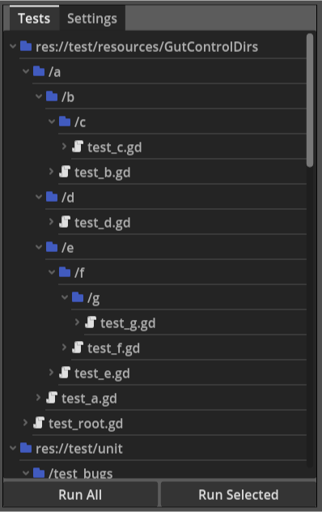

You may want to deploy your tests with your game so you can run tests on different devices and platforms. GUT provides the handy GutControl to help you run your tests. 
GutControl
In order to run tests in a deployed game you must create a scene to kick off the tests from within the game. Here's the steps:
Remember to add *.json in your export settings (resources tab), or your config file will not be exported with your game.
*.json
# from https://github.com/bitwes/Gut/blob/godot_4/scripts/main.gd # and https://github.com/bitwes/Gut/blob/godot_4/scenes/main.tscn # ------------------------------------------------------------------------------ # This is an example of using the GutControl (res://addons/gut/gui/GutContro.tscn) # to execute tests in a deployed game. # # Setup: # Create a scene. # Add a GutControl to your scene, name it GutControl. # Add this script to your scene. # Run it. # ------------------------------------------------------------------------------ extends Node2D @onready var _gut_control = $GutControl # Holds a reference to the current test script object being run. Set in # signal callbacks. var _current_script_object = null # Holds the name of the current test being run. Set in signal callbacks. var _current_test_name = null func _ready(): # You must load a gut config file to use this # control. # # Here we use the Gut Panel settings file. This can be any gutconfig file, # but this one is most likely to exist. You can create your own just for # deployed settings. You could even create multiple and have buttons to # load different configs. # # Some settings may not work. For example, the exit flags do not have any # effect. # # Settings are not saved, so any changes will be lost. The idea is that you # want to deploy the settings and users should not be able to save them. If # you want to save changes, you can call: # _gut_control.get_config().write_options(path). # Note that you cannot to write to res:// on mobile platforms, so you will # have to juggle the initial loading from res:// or user:// and save to # user://. _gut_control.load_config_file('res://.gut_editor_config.json') # Returns a gut_config.gd instance. var config = _gut_control.get_config() # Override specific values for the purposes of this scene. You can see all # the options available in the default_options dictionary in gut_config.gd. # Changing settings AFTER _ready will not have any effect. config.options.should_exit = false config.options.should_exit_on_success = false config.options.compact_mode = false # Note that if you are exporting xml results you may want to set the path to # a file in user:// instead of an absolute path. Your game may not have # permissions to save files elsewhere when running on a mobile device. config.options.junit_xml_file = 'user://deployed_results.xml' # Some actions cannot be done until after _ready has finished in all objects call_deferred('_post_ready_setup') # If you would like to connect to signals provided by gut.gd then you must do # so after _ready. This is an example of getting a reference to gut and all # of the signals it provides. func _post_ready_setup(): var gut = _gut_control.get_gut() gut.start_run.connect(_on_gut_run_start) gut.start_script.connect(_on_gut_start_script) gut.end_script.connect(_on_gut_end_script) gut.start_test.connect(_on_gut_start_test) gut.end_test.connect(_on_gut_end_test) gut.end_run.connect(_on_gut_run_end) # ----------------------- # Events # ----------------------- func _on_gut_run_start(): print('Starting tests') # This signal passes a TestCollector.gd/TestScript instance func _on_gut_start_script(script_obj): print(script_obj.get_full_name(), ' has ', script_obj.tests.size(), ' tests') _current_script_object = script_obj func _on_gut_end_script(): var pass_count = 0 for test in _current_script_object.tests: if(test.did_pass()): pass_count += 1 print(pass_count, '/', _current_script_object.tests.size(), " passed\n") _current_script_object = null func _on_gut_start_test(test_name): _current_test_name = test_name print(' ', test_name) func _on_gut_end_test(): # get_test_named returns a TestCollector.gd/Test instance for the name # passed in. var test_object = _current_script_object.get_test_named(_current_test_name) var status = "failed" if(test_object.did_pass()): status = "passed" elif(test_object.pending): status = "pending" print(' ', status) _current_test_name = null func _on_gut_run_end(): print('Tests Done') # You can kick of the tests via code if you want. func _on_run_gut_tests_button_pressed(): _gut_control.run_tests()